1916—Tailored Skirts
Woman's Institute of Domestic Arts & Sciences, by Mary Brooks Picken
TAILORED-SKIRT CONSTRUCTION
ONE-PIECE CIRCULAR SKIRT
12. 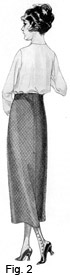 The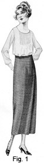 first tailored skirt to be considered is the one-piece circular skirt, shown in front view in Fig. 1 and in back view in Fig. 2. This skirt undoubtedly is the easiest of all tailored skirts to make, as it has only one seam, which is in the center back. In connection with the making of this skirt the actual application of many details, such as the slot seam, the fly for the placket, the stay belt, facing, skirt braid, and so on, are taken up. These details, on account of their relation to other tailored skirts, should be considered well, so as to come to a correct understanding of them.
13. Material Required.—It is very evident that the one-piece circular skirt must be made of material that is wide enough to form the entire skirt. If the skirt is to be long, wide material, say 52 to 56 in., must be used; but, if it is to be short, narrower material—that is, material 36 to 44 in. in width—will do. A good plan always is to have the material at least 12 in. wider than the length of the skirt in front. Such material will usually accommodate the skirt pattern, which is higher at the waist line in the center back than at the waist line in the center front, and will also allow for a good turn at the bottom of the skirt. The amount of material required for a skirt of this kind is equal to twice the distance of the pattern from the bottom of the center-front line to the bottom of the center-back line, plus 2 in. for seams; in other words, to determine how much material is needed, measure the skirt pattern at the bottom from the center-front line to the center back, and then multiply this by 2 and add 2 in.
14. The material itself for a garment of this kind should be moderately plain in weave, so as not to attract attention to the fact that the skirt is cut crosswise of the material. Material with very prominent stripes, which would run crosswise of the front and form a V line in the center back, would hardly make a pleasing skirt; yet, in selecting the material, if stripes that will bear running crosswise without making the figure appear shortened are chosen, pleasing effects can be secured For the skirt here illustrated use is made of a uniform plaid with a crosswise stripe that is sufficiently prominent to break to some extent the stripe that passes around the skirt; also, as will be observed on referring to Fig. 2, this indistinct-plaid combination gives a pleasing line to the center back of the skirt. The material is light-weight, closely woven cheviot that is 56 in. wide. In color, it is midnight blue, which is a very dark blue, and the plaid effect is formed by dark, moss-green stripes that run lengthwise and crosswise. Of course, as in making other garments, many other materials and designs may be used with good effect for one-piece circular skirts.
15. Pattern Required. The pattern required for the skirt here discussed is the plain circular-skirt pattern with a 1 1/2-in. extension above the waist line and with the lower edge either turned up or cut off at a line that represents the finished skirt length. No allowance is made for a hem on such a skirt as this, for when the lower edge comes on the bias, as in this case, it is best when faced with a bias or a fitted facing. If it were hemmed, the skirt would be too full to give a pleasing, satisfactory finish.
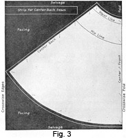16. Cutting Out the Material.—Before attempting to cut out the material for any tailored skirt, especially if it is woolen, it should be sponged and shrunk. With the material for this skirt thus made ready, fold it through the center crosswise and pin the selvage edges together. Then, on it place and pin the pattern so that the center-front line is on the crosswise fold, as shown in Fig. 3. Proceed, next, to cut it out, allowing 1/2 in. for a seam at the top of the skirt and 1 in. at the center back, so that it may be finished in a slot seam if desired; also, as it is much easier to turn an even line at the lower edge of the skirt if more than a seam's width is allowed, especially if it is much on the bias, allow in this case at least 1 in. at the bottom for finishing.
17. Marking, Pinning, and Basting.—After the material is cut out, mark-stitch the waist and hip lines and also the center-back seam. Then measure down the placket length from the waist line, lay the skirt out on the sewing table, and pin the seams together, taking care to have the hip lines and the waist lines together. While pinning the seams of any woolen material, always take the precaution of laying it out on a table, so that neither edge of the seam will be stretched when the pinning is done. Next, baste from the bottom of the placket to the bottom of the skirt, employing stitches that are about 1/4 in. long, so that the edges of the seam will be kept smooth when it is pressed open to form a slot seam.
18. First Fitting.—With the skirt basted as directed, slip it on merely to see whether it is correct, remembering to lift it above the waist line the amount allowed in the pattern and to adjust it so that the mark-stitching of the waist line comes exactly parallel with the waist line of the figure. The ripple of a circular skirt begins well up on the hips, for which reason no attempt should be made to fit the skirt close to the figure; on the contrary, this kind of skirt should so hang from the belt or the band as not to fall in and appear too tight around the hips.
19. Making the Slot Seam and the Placket.—The slot seam and the placket at the center back of the skirt should receive attention next. For the slot seam, a lengthwise strip is needed. This strip should be 2 1/2 to 4 in. wide, the width depending on the stitching of the slot seam. If the material used is wide and the skirt is not too long, this lengthwise strip may be cut without piecing; in this case, however, piecing is necessary, because the material is not wide enough to permit the skirt and the strip to be cut in one piece for the center-back seam. If plaid or figured material is used for such a skirt, care must be taken in piecing the strip to match the design so that the piecing will not be noticeable.
20. With the strip pieced, proceed to prepare the fly for the placket. Back of one end of the strip, place a piece of facing silk that is 1 1/2 in. longer than the placket length and 3/8 in. wider on each side than the strip, placing the wrong side of the strip to the wrong side of the facing. Then turn the side edges of the facing over on the material and stitch them; also, turn under the lower edge of the facing and fell it down, so as to prevent the stitches from showing through on the right side of the strip. Next, underneath the right side of the placket, slip a straight strip of facing silk that is 1 1/2 in. wide and 1 1/2 in. longer than the placket opening. Baste this facing in position exactly the same as for a habit-back placket.
21. Next, lay the skirt out on the table so that its center-back seam is up and its wrong side is out; then pin and baste the strip directly over the seam, taking care to hold the strip easy, so that it will not be stretched or drawn at any place. In pinning and basting the strip in position, it is advisable to slip a piece of board like that on which material is rolled or a small sewing board underneath the seam inside the skirt, in order to avoid any danger of catching the pins or the basting to any portion of the skirt that is lying underneath the seam. Such danger can also be overcome by holding the left hand underneath the seam; but the hand prevents the seam from lying out flat, which it must do to permit of a neat, satisfactory finish. When the strip is basted in position, dampen it on the wrong side and shrink out the slight fulness that was held in, so that when the seam is stitched in it will be smooth and its edges will be even.
22. Proceed, next, to stitch the right side of the placket opening as for a habit-back placket, using stitching that is 1/2 to 5/8 in. wide, and continue this stitching to the bottom of the skirt. Then stitch the left side of the placket from the waist line to the bottom of the skirt. In stitching this seam, care must be taken to have the stitching true and exactly the same distance from the edge on each side. The distance that the stitching should come from the edge depends considerably on the weight and the weave of the fabric that is used for the skirt. On soft materials that stretch easily, the stitching should come rather close to the edge, in order to hold the edge securely, but on firm materials the stitching may be farther from the edge, as the material will hold itself in shape after it is thoroughly pressed.
23. When the stitching is completed, remove all basting from the seam, bind or overcast the edges of the strip from the bottom of the placket to the bottom of the skirt, and then place a damp cloth over the seam and press it thoroughly. The seam will lie flat and smooth if it has been carefully basted, and neither the seam nor the underneath strip will be stretched in the least. If the inside edges of the slot seam twist the least bit or do not lie perfectly flat, then lift these edges and stitch them directly on the edge, stitching from the waist line down. Such stitching will form a double-stitched slot seam and will aid in preventing the seam from twisting or pulling.
At this stage of the work, it is advisable to hang the skirt up by pinning the waist line to a straight strip of muslin fastened to a coat hanger or arranged in some way that will permit the waist line to be pinned straight across, so that the bias back will have a chance to sag before the hem is turned.
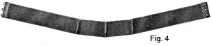 24. Making the Inside Stay Belt.—The next thing to be considered in the construction of this one-piece skirt is the inside stay belt, which is illustrated in Fig. 4. This belt is made of straight belting, which material can be purchased in cotton for 8 to 15 cents a yard and in silk for 15 to 40 cents a yard. Many qualities of belting are to be had. Some manufacturers make a soft belting that closely resembles elastic in weave and texture, and others make belting that is so stiff that it is almost impossible to push a needle through it. This stiffness sometimes exists when the belt material is very closely woven; and, again, the material may be very stiff because it is filled with a sizing of starch. In choosing materials for stay belts, however, it is well to aim for a happy medium; that is, to use belting that is moderately soft and yet stiff enough to hold the skirt in its correct position.
25. If the skirt is to be finished very high above the waist line, it is well to get belting that is about 3 in. wide. If belting 2 in. or more in width is used, darts similar to those shown in Fig. 4 should be placed at the upper edge of the stay belt. Such darts may be made very small and so that they taper off to nothing at a point about three-fourths the width of the belt. In a wide belt, the first two darts should be placed about 2 1/2 in. on each side of the center back, and the second two darts one-sixth of the waist measure from the back darts. After the darts are placed in the belt, put the belt on, and then, instead of lapping the edges, bring them together and pin them up close to the figure, as in a seam, so that the exact size of the belt may be determined. Cut each edge of the belt off to within 1/2 in. of the pins, and then turn the ends over 1/2 in. to the wrong side of the belt and overhand them down, as shown in the illustration. Sew hooks and eyes on next, placing the hooks so that their prongs are in 1/8 in. from the right-hand end of the belt and the eyes of the hooks project 1/8 in. beyond the left-hand end.
As the raise of the circular skirt here discussed is not very great, the stay belt may be made the same as in Fig. 4—that is, with three tiny darts 2 in. apart in the front of the belt. Beginning at the top edge of the belt, take in 1/4 in. of the belt for the top of each dart. The belt will thus be made to fit straight around the waist line at the back and to extend down a little across the front, giving a desirable waist line to the skirt.
26. Second Fitting—Method of Overcoming Sagging. When the belt is done, put it around the figure and hook it at the center back. Then put the skirt on, adjust it correctly, and hook up the placket. Next, turn the top edge of the skirt over the stay belt, so as to get a good, even line for the top of the skirt, and pin the skirt securely all the way around the belt, so that it will fit around the waist line perfectly.
With the skirt thus pinned to the belt, proceed to turn the bottom of the skirt, making it 1/4 to 1/2 in. shorter at the back than in the front. This may be done while the skirt is on the figure by simply changing the skirt gauge properly, or the bottom may be turned an even length and this 1/4- or 1/2-in. difference taken care of when the basting line is put in. The reason for making the back shorter than the front is to overcome sagging. Since the front of this skirt is cut on a crosswise thread of the material, there will be no possibility of this part dropping down; but, no matter how carefully a skirt is made, if it is cut on the bias, it will have a tendency to sag, especially at the back. No woman can look trim and neat in a skirt whose back is longer than its front, unless it is a clearly defined train; and, as the natural tendency of a woman is to stand very erect while being fitted, and then, when wearing the skirt, to stand in such a way as to rest the weight of the body on the hips, the skirt will always appear longer in the back than in the front. Sagging may be taken care of to some extent by turning the edge a trifle shorter across the back, as mentioned; therefore, in making a tailored skirt, even when each gore is cut on the straight of the material, and especially one that is plain, the best plan is always to have it at least 1/4 in. longer in the front so that there will be less danger of its sagging down.
27. Basting the Skirt and the Belt.—When the lower edge of the skirt is turned, remove the skirt, taking care to keep the upper edge pinned securely to the belt and not to lose any pins at the bottom of the skirt. Then proceed to baste the upper part of the skirt to the stay belt; also, turn the material over on the belt and cover the raw edge with bias facing or seam binding in the manner previously shown, remembering to finish the facing off by whipping the ends down at each end of the belt. Next, baste the skirt around the lower edge so as to mark the length, and press the edges in the regular way; then lay the skirt out on the table and trim the turned edge away from the bottom of the skirt to within 5/8 in. of the crease, thus making it ready for the application of the facing.
28. Cutting and Applying the Facing.—With the skirt laid out smooth on the table, proceed to cut out the facing to fit the lower edge of the skirt, utilizing for this purpose the pieces of material that remain after cutting out the skirt. The facing should not be less than 2 1/4 in. wide nor, as a general rule, more than 4 in. wide. Sometimes, however, when wide hems are in vogue, the facing may be cut wider. In order to get the facing accurate, lay the pieces of material over the lower edge of the skirt and while cutting be careful that the pieces lie very smooth on the top of the skirt; also, cut it as evenly as possible, so as to make sure that it will fit when in position.
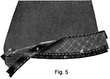29. When the facing is cut, seam it together and press the seams open. Then apply it to the skirt in the manner shown in Fig. 5, remembering to join the convex side of the facing, instead of the concave side, to the bottom of the skirt and to keep the work flat on the table, so that neither the edge of the skirt nor that of the facing will become stretched in any place. Baste the facing on with a 1/4-in. seam, as shown at a, and then stitch the seam and press it open. When the seam is stitched and pressed and the facing is turned over to the wrong side of the skirt, it is well to bring the facing up 1/4 to 3/8 in. from the bottom of the skirt and thus avoid any possibility of its showing on the right side. If the skirt is made of broadcloth or any other firm material on which an imprint of the seam that joins the facing to the skirt might show on the right side, additional precaution must be taken. In such cases, before pressing the facing in place, cover the seam with a bias piece of light-weight cambric that is a little wider than the seam, letting it extend to the bottom of the skirt. With the cambric placed inside the facing in this way there will be little danger of the seam showing through on the right side. Secure the cambric in position with a long, uneven basting-stitch, using a harmonizing silk thread so that the stitches will not show prominently on the right side.
30. When the facing is pressed, it must be trimmed evenly. To simplify this work and insure an even facing all around the skirt, use as a guide a strip of cardboard that is about 3/4 or 1 in. wide and just as long as the width of the narrowest place, measuring from the bottom of the skirt to the top of the facing. In trimming, slip this cardboard along over the facing, keeping one end of it even with the bottom of the skirt and trimming the top of the facing off in line with its opposite end.
Next, bind the upper edge of the facing, using in this case a 1-in. bias binding of silk, sateen, or percaline. Usually, material like that used for finishing the placket is suitable for the binding. When a strip of binding that is long enough to go around the skirt is made ready, place its right side to the right side of the facing and baste with a 1/4-in. seam. Then turn the binding over to the wrong side and stitch it on its edge, as atb, Fig. 5, taking care to have the binding turn over the facing, rather than to turn the facing over and thus make an extra thickness at the top of the hem. With the facing in this condition, unless skirt braid is to be applied, the hem, when basted to the skirt, is ready to be felled or stitched down. To do this work, silk thread that matches the color of the skirt material as nearly as possible should be used. If it is to be felled by hand, a hemming-stitch about 1/4 in. long should be employed. The stitches should be taken moderately loose along the top edge of the binding, so as not to draw or show through on the right side of the skirt.
31. Influence of Styles on the Finish of Hems.—Whether the hem or the facing of a tailored skirt should be put in by hand or by machine is generally determined by prevailing styles. In making skirts, therefore, it is always well to observe from fashion magazines and from the best garments shown in the shops whether the hems are put in by hand or whether they are stitched. Also, it is well to note what their widths are, for some materials are attractive with wide hems and in others hems of moderate width are very satisfactory. Whether or not the hem is to be stitched or whether it should have more than one row of stitching depends a great deal on the seams of the skirt or the costume of which the skirt is a part, although, sometimes, tailored skirts are not intended to express that thought so clearly. For example, the skirt of a dress often has a hem whipped in instead of stitched, because if stitching is not used on the waist it should be avoided as much as possible on the skirt. Such points as these should always be taken into consideration in making a skirt in order to determine just the best way in which to finish it.
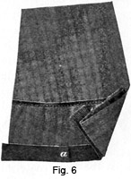 32. Skirt Braid and Its Application.—Sometimes it is necessary to protect in some manner the lower edge of a tailored skirt. For example, if a skirt is very narrow, and therefore necessarily long, it is always in danger of being torn by the shoes of the wearer in walking; at least, it is subject to much wear on account of the shoes rubbing against it. A full skirt that is short does not necessarily need such protection, but if such a skirt is long it is in much the same danger as the very narrow skirt. For the protection of skirts, skirt braid applied to the bottom of a skirt in the manner shown , in Fig. 6 is very satisfactory. Such braid is woven from all-wool threads and from mercerized-cotton threads, and varies in width from 5/8 to 3/4 in. It conies in bolts of 4 to 6 yd. and in various colors. Very fine braids in choice colors sometimes cost 15 cents a bolt, but in most cases a bolt of skirt braid may be purchased for 10 cents. As such braid is not expensive, the only possible objection to its use is the time required to put it on. This matter, though, is too trivial to interfere when it is considered how much the braid protects the skirt, how much longer the skirt will wear with the braid on, and how much neater the skirt will appear by not fraying at the lower edge.
33. The selection of skirt braid requires careful attention, as it is very necessary that it should harmonize with the material of the skirt. Like skirt belting and seam binding, it does not come in all colors; but it comes in enough colors to permit it to be used on any color of skirt. If a dark skirt is made and a color of braid to match it exactly cannot be procured, then black braid is the best to use. For skirts light in color, the braid may be had in light tans, grays, and white, from which, as a rule, can be selected a color that will be satisfactory, because, in putting the braid on the skirt, it is placed so that only 1/8 in. shows at the lower edge. For silk skirts or for very light woolen skirts, a mercerized braid is perhaps more satisfactory than woolen braid, as it is not quite so thick or heavy; also, it wears better. Woolen braid, however, has several good points in its favor. It does not fade, dirt and dust brush out of it very easily, and then, too, if it happens to be put on a trifle too full, the fulness may be shrunk out of it readily.
34. To apply skirt braid to the bottom of the skirt, hold the right side of the skirt toward you and place the braid to the wrong side of the skirt. Then, with uneven basting, baste all around the extreme edge of the skirt, as shown at c, Fig. 5, taking care all the time to keep the braid 1/8 in. below the bottom edge of the skirt and also to keep it perfectly smooth and not to permit it to draw or become full in any place. When the braid is basted on around the bottom of the skirt, baste it again at the top, as shown at d, basting it to the facing but not catching the stitches through the skirt material. Next, open out the facing and, with the sewing machine, stitch it along the top edge of the braid with silk thread. Some tailors prefer to whip the braid on by hand, claiming that the work is neater. However, if the braid is carefully basted, not much time is required to stitch it by machine, and, besides, the braid is held much more secure, thus decreasing the danger of the heels of the wearer's shoes catching in it and tearing it off. When the braid is in position, lap the ends in a flat fell, as shown at a, Fig. 6, so that the joining will be as flat and as neat as possible. Fell the ends down on both sides of the braid with very close stitches so that they will not pull out, and when this is done fell the top edge of the hem down, remove the bastings, and press the lower edge of the skirt.
With the skirt thus completed, put it over the ironing board, place over it a large press cloth that has been dampened and wrung reasonably dry, and then proceed to give the skirt a thorough pressing, redampening the cloth when necessary, pressing thoroughly and carefully, and taking care not to leave any mark of the iron or to make any shiny places.
35. If it is decided to use skirt braid after the hem of the skirt has been whipped or stitched in, the braid may be put on by hand; indeed, such a plan is better than to rip the hem and then try to put it on by machine, for the reason that the work may be done more quickly and with greater neatness. To put the braid on in a case like this, open up the seam of the facing on the wrong side of the skirt and then slip inside of the hem a long strip of cardboard that is a little narrower than the width of the hem or the facing. The cardboard must be narrower than the hem or the facing so that it will slide along easily. With the cardboard in position, proceed to whip the braid on, which work may then be done without any danger of catching the stitches through to the wrong side. In whipping the braid on, however, great care must be taken to avoid stretching it, as well as to keep it an even distance below the lower edge all the way around the skirt. It should, therefore, be basted to the lower edge of the skirt before beginning to whip it on. When the braid is in position, join it in the regular way with a flat-fell seam; then remove the cardboard from inside the hem and whip together the opening that was made for the cardboard.
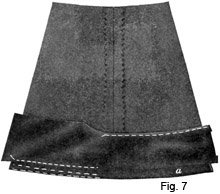 36. Facings of Light-Weight Material.—For skirts made of very heavy fabrics or in cases where not enough of the skirt material is left for the facing, it is a good plan to apply a facing of silk, sateen, or percaline of good quality and of a color that harmonizes with that of the skirt, following the plan illustrated in Fig. 7. In using a facing of this kind, the material of the skirt should be allowed to extend 1/2 to 1 in. above the bottom edge, as shown at a, so that there will be no possibility of the facing showing on the right side of the skirt. Keeping such facing above the skirt material is advisable, for the reason that the skirt material is always more durable than the facing and will therefore wear better. The silk facing is cut and applied in the same manner as a facing of skirt material, except that the upper edge need not be bound and that the facing may be cut on a true bias and one edge shrunk to assume the shape of the skirt. It may be turned, basted, and felled down, because it is not so thick as to make binding necessary. Facings of light-weight material, especially when cut on the bias, are very easily stretched where they join heavier materials; therefore, care must be exercised not to draw the facing tighter than the skirt material. It should be eased on very carefully; not enough to form a wrinkle, but just enough to prevent it from pulling or drawing.
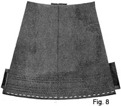 37. Stitching as Trimming at the Bottom of a Skirt. Sometimes the lower edge of a skirt is trimmed with rows of stitching placed as shown in Fig. 8. Such trimming is very attractive, especially on plain skirts. Although, in this case, the stitching is in two groups of three rows, other ideas may be easily carried out. The chief point to consider is the spacing of the rows of stitching, which must be even, so that the design will be symmetrical. In order to-apply ornamental stitching to the bottom of a skirt, facing should be applied in the manner already described; then, when it is basted and thoroughly pressed, the stitching may be done, but for each row of stitching the gauge of the sewing machine must be properly adjusted. Thus, for the first row of the stitching here illustrated, adjust the gauge so that the stitching will come 1/2 to 3/4 in. above the lower edge of the skirt; for the second row, adjust it again so that the stitching will be a scant 1/4 in. above the first row; and for the third row adjust it so that this row will be a scant 1/4 in. above the second row. When the first group of three rows is finished, proceed with the next group. For the first row of this group, adjust the gauge so that the space between it and the top row of the first group is a little less than the space between the bottom of the skirt and the first row of stitching; then, for the second and the third row of the second group, adjust the gauge as for stitching the second and third rows of the first group.
If the facing is wider than the one here shown, several groups consisting of two rows of stitching spaced 1/4 or 3/8 in. apart may be put in the space extending from the bottom of the skirt to the top of the facing, or, if desired, another group of three rows, such as in Fig. 8, may be added. In connection with the application of ornamental stitching to the bottom of a skirt, it is well to remember that if the skirt is part of a tailored suit the stitching must agree with that on the jacket of the suit.
38. Stiffening the Lower Edge of a Skirt.—Frequently it is desirable to have the lower edge of a tailored skirt stand out. Especially is this true of plain skirts the bottoms of which are trimmed with stitching and of skirts belonging to sporting costumes. For such a purpose, as well as to hold the edge of a skirt very firm, crinoline is often used. This stiffening material comes in white, black, and a few colors, and costs from 15 to 35 cents a yard, the 25-cent grade, as a rule, being very satisfactory. In using crinoline for work of this kind, never make the mistake of buying a poor grade. A very coarse crinoline loses its stiffness, becomes flabby, and does not give the desired effect that a firmly woven, light-weight crinoline does. On the other hand, light-weight, firmly woven crinoline holds its stiffness well, shapes in nicely at the bottom of the skirt, and may be easily stitched through.
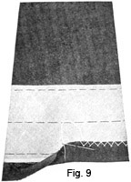In cutting the crinoline facing, keep it on the true bias; then lay it out on the bottom of the skirt and dampen it, shaping it a trifle, and while doing this draw the upper edge in a little, so that it will fit the lower part of the skirt exactly. It would, of course, be detrimental to the appearance of the outside skirt to have any wrinkles form in the crinoline; therefore, after the crinoline is dampened, it is well to run a warm iron over it very carefully, so as to shrink up any fulness and to get the shape correct. To apply the crinoline at the lower edge of the skirt as shown in Fig. 9, place the prepared crinoline to the wrong side of the skirt, letting it extend a generous 1/8 in. below the basting that marks the bottom line of the skirt, and baste it, as shown. Then bring the lower edge of the skirt up and baste from the right side, keeping the turn exactly in line with the basting. This will cause the crinoline to fold back as the illustration shows, thus protecting the material and giving a more even line to the skirt bottom. Next, catch-stitch the turned edge of the skirt to the crinoline, taking care that the stitches do not show through on the right side. Finally, cover the crinoline with a bias facing of silk or percaline, felling it down neatly at the top and bottom edges.
39. Hangers for Skirts. Instructions relative to the making of tailored skirts would be incomplete if no information were given about skirt hangers, for to keep such garments right when they are not in use they must be suspended properly. There are really three kinds of skirt hangers, thus giving a woman a good variety from which to choose.
40. One kind of skirt hanger is made by sewing narrow strips of material, seam binding, or tape to the inside of the skirt band or belt, generally one strip on each side, so that the skirt may be suspended from two hooks spaced the correct distance apart to accommodate them. In making a hanger of this kind, turn the edges of a narrow strip of the facing material, seam binding, or tape and stitch these edges together; then cut the material so that each strip for the hanger will be about 2 1/2 in. long, and secure them in position by overhanding the ends of each closely at the bottom of the band or the belt, placing them straight along the edge of the band or the belt. By securing the strips to the garment in this manner there will be no possibility of the hanger material showing above the belt or the band when the skirt is being worn; in fact, it will lie perfectly smooth and flat underneath and will not appear bulky in any way. Sometimes such skirt hangers are made by turning under the edges of strips of narrow facing, and then simply sewing them on in the way that tape is put on the hems of towels; that is, in the form of a loop. If the band of the skirt on which such hangers are placed is narrow, they are liable to show above the belt, unless, of course, it is remembered always to push them down when the skirt is put on; therefore, hangers sewed straight in line with the belt or the band are much more satisfactory.
In hanging up a skirt on which this kind of hanger is used, the strips should never be placed together and then hung over a single hook, because when this is done the skirt becomes folded incorrectly and is therefore liable to get out of shape quickly. The best plan, as already mentioned, is to space the hooks in the clothes closet properly; that is, far enough apart to permit the two hangers of the skirt to be slipped over them and thus hold the skirt band straight and not permit the skirt to sag down in the center. Women who are particular about their skirts, provided such hangers are used on them, will always take pains to hang them up in this manner.
41. Another kind of skirt hanger that is used considerably is made of wood and wire. It is similar to the hanger used by men for hanging up their trousers, being arranged so that it may be slipped over the belt or the band of the skirt, clamped in position, and then hung over a hook or a nail. A hanger that slips over the band or the belt of a skirt in this manner is preferable to the hangers just mentioned, because a skirt so supported is in no danger of getting out of shape; in fact, such a hanger serves to hold the skirt in position, that is, to prevent it from sagging at the waist line, and thereby overcomes the formation of lines over the hips. This style of hanger can be purchased in various stores.
42. The third style of hanger referred to is made by covering two small metal rings with crocheting and then attaching a medium-sized safety pin to each one. To use such hangers, the pins are pinned in the belt of the skirt and the rings are slipped over properly spaced hooks in the closet or wardrobe. Such hangers are convenient, because they can be used for different skirts, and as the safety pins may be caught in the band they do not cause the top of the skirt to be pulled out of shape. Ring skirt hangers in sets of four or six pair make very useful gifts or remembrances, and are frequently made up by women for such purposes before the Christmas season.
SIX-GORED SKIRTS
CIRCULAR TAILORED WASH SKIRT
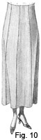43. In Fig. 10 is shown a tailored circular skirt made of wash material. This skirt has six gores, front and back panels, and a raised waist line, making it desirable for nearly all women. A strictly tailored wash skirt of this kind requires as much care in making as the woolen skirt just considered. In fact, if it is desired to have any tailored wash skirt assume the perfect lines that a tailored skirt calls for, the same pains must be taken in pinning and basting, in fitting, and in finishing.
44. Material Required.—For the skirt shown in Fig. 10 there is required 3 1/4 yd. of white pique that is 40 in. wide. This material should be thoroughly shrunk before it is cut out, so that there will be no danger of its shrinking after it is made up. If material wider than 44 in. is used for this kind of skirt, only two skirt lengths, plus 1/4 yd., will be needed; if material narrower than 40 in. is used, then three skirt lengths will be necessary, because of the fact that, in cutting a panel skirt, the front and back gores must be placed on a fold of the material and the center of each side gore as nearly as possible on a lengthwise thread.
45. Preparing the Pattern.—For this tailored wash skirt is utilized the plain circular-skirt pattern so divided as to give a six-gored skirt with a panel in the front and in the back and a seam directly over each hip. To divide such a pattern so that it will serve in cutting out a six-gored skirt, first mark the front panel on it. Measure in from the center-front line on the waist line one-sixth of one-half the waist measure and locate a point; also, measure in from the center-front line on the hip line one-sixth of one-half the hip measure and locate another point. Then, with the straight edge of the long arm of the square or of a yardstick on these points, draw a line from the waist line to the bottom line of the skirt pattern. Next, mark the pattern for the back panel in the same way; that is, on both the waist line and the hip line, locate points from the center-back line that are one-sixth of one-half the waist measure and the hip measure, respectively, and draw a line from the waist line to the bottom line of the skirt pattern. The center-side line will then serve as the division line for the other two panels, as will readily be seen. By cutting on these lines, there will be obtained pattern pieces for the six-gored skirt. Each piece of the pattern should be notched, so that no difficulty will be met in putting together the garment cut with its aid.
Before cutting the pattern apart, however, a 1 1/2-in. extension must be made above the waist line, so as to serve as a finish and to give the required raised-waist-line effect. To do this, simply extend the center-front, center-side, and center-back lines, as well as the dividing lines just made, 1 1/2 in. beyond the regular waist line and then draw a new waist line.
Also, after the pattern is cut apart, but before placing it on the material, it is necessary to decide how far the skirt is to come above the floor. With this determined, measure each pattern piece that is drafted floor length and fold it back across the bottom at a point from the waist line that represents the length desired, plus 1 in. The additional 1 in. is allowed as a precaution; that is, so as to have ample length, as well as sufficient material to turn up, in order to get a true, even edge at the bottom of the skirt.
46. Placing the Pattern and Cutting Out the Material. With the pattern thus made ready, place the skirt material on the cutting table, folding it through the center lengthwise so that its right sides are together, and pinning together the selvage edges so that the material cannot slip when the pattern is placed on it. Put the front and the back panel pieces of the skirt pattern on the material so that their center-front and their center-back lines are on the fold. In doing this, it is a good idea to place the bottom edge of the center-front gore at one end and the center-back gore at the other end. The material between may be used for the side gores, which require a little more material than do those placed on the fold, for the center of each gore must be placed as nearly as possible on a lengthwise thread of the material. By adjusting the pattern pieces and slipping them carefully alongside the panels for the front and the back, it may be possible to save some material through the center of the piece, especially if the pattern is for a slender figure.
47. In cutting skirts, there is often a temptation to sacrifice the lines of the side gores in order to save material; this, however, should not be done, for a skirt will never hang so well as when the pattern is placed correctly on the material, regardless of whether material can be saved if the pattern is placed some other way. Tailors often remark that a home-made garment can always be detected by the economy with which the cloth was cut, and no wise worker will want this criticism to be true of any garments she might make. Even if there is much virtue in cutting most economically, the amount saved does not justify placing the pattern pieces on the material incorrectly. Therefore, in a gored skirt, the center of each gore, that is, a line drawn at direct right angles to the foundation hip line from a point midway of the gore at the hip line, should come on a lengthwise thread.
48. When all the pattern pieces are placed in position, trace around all the edges; also, mark-stitch the hip line and the waist line, or mark them by running a basting thread along them. In material that is so firmly woven as pique, the use of the tracer is not advisable, because it might cut through and leave ugly marks in the finished skirt.
Welt seams are more satisfactory than other seams for skirts of this kind, as they finish flat, iron nicely, and are not bunglesome. Therefore, if such seams are to be used, allow, in cutting, 3/4 to 1 in. on all edges for seams. If plain seams are to be used, allow only 3/8 in. Save all pieces of material that remain after cutting, so that a fitted facing may be made for the bottom of the skirt after the second fitting; that is, when the lower edge is turned. Before removing the pattern from the material, notch each gore with one, two, and three notches, so that no trouble will be encountered in putting the skirt together correctly.
49. Marking, Pinning, and Basting.—When the skirt is cut out and the pattern is removed, run a basting thread along the center back and the center front of each panel in order to mark them. Then pin the edges of the gores together from the hip line up and down, and baste in the same manner, taking care to keep the pattern lines together. In such materials as pique, and, in fact, any material firm enough for a tailored wash skirt, the tracing will generally show clearly enough on the side seams and at the waist line to mark the pattern lines without using the mark-stitching; however, it is well always to make sure of this before removing the pattern from the material, for there is never a time when pattern lines may be overlooked, because, as must be remembered, from them are built the perfect lines of a garment.
50. Preparing the Placket Opening.—In this tailored skirt, the placket opening is at the left side of the front gore. The placket opening in a skirt with a front and a back panel is preferably located at the side front, for the reason that the side back of a figure is always more attractive. The placket in a six-gored skirt may come at the left side of the back panel, but, unless it is made absolutely perfect, the best plan is to put it at the side front, where it will be less conspicuous. Another point against a placket in the back is that it shows signs of wear more quickly than one made at the side front of a skirt. To prepare for the placket, measure down from the waist line the length that it is desired to make the placket; place a crosswise pin in the usual way; and then run a basting thread along the pattern line on each side of the placket opening, so that there will be no danger of losing sight of the traced lines in fitting.
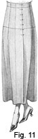51. First Fitting.—With the skirt thus far advanced, it is ready for the first fitting. Fig. 11, which shows the front of the skirt in the first fitting, will serve to illustrate how the placket opening should be pinned up and the way in which the skirt should be adjusted at the waist line. In this fitting, pull the skirt up well on the figure, remembering that it has a 1 1/2-in. extension above the waist line; then adjust it smoothly around the hips and notice whether it is too tight or too loose to give the desired effect. If it is too tight, lift the skirt a trifle at the waist line; if it is too loose, then take off a corresponding amount on each side gore over the hips to make the skirt fit correctly; if there is too much fulness at the lower edge of the skirt, take in the seams so as to get a narrower effect.
In the first fitting, practically the only thing to consider is the fit of the skirt through the hips; the finish of the waist line and the hem do not require attention until after the welt seams and the placket are finished.
52. Preparing the Skirt for the Second Fitting.—After removing the skirt carefully, proceed with the making of the placket, the stitching, and the making of the inside stay belt. Apply the placket in the manner previously directed for the wash placket. In stitching the welt seams, be very careful to adjust the gauge on the sewing machine so that it will stitch evenly all the way; also, be sure to baste the seams and press them to one side before adding the last stitching, for where stitching is used as trimming the seams must be as nearly perfect as possible and the stitching on them absolutely straight. The length of the stitch, as well as the tension, should be considered also, so that the stitching will be uniform and not appear drawn or too loose.
Prepare the inside stay belt for the tailored wash skirt in the manner directed for the preparation of the stay belt for the one-piece circular skirt, but, of course, make it so that the opening will come on the left side. In arranging the darts in this stay belt, put the belt on so as to determine just where it is to be joined; then it will be a simple matter to determine where the darts should come. The darts should be in the center front or the center back of the belt and sometimes in both; therefore, if these points are not marked while the belt is on the figure, they might not be placed in the exact position. When the belt is made ready and the hooks and eyes are sewed on, put it on the figure and proceed with the second fitting.
53. Second Fitting.—For the second fitting, put the skirt on, pull it up well on the belt, and turn the top of the skirt in between the belt and the skirt itself, rather than over the belt. With the aid of plenty of pins, pin the skirt to the belt every few inches, so that the skirt will fit perfectly smooth. Before pinning the skirt, however, fasten up the placket and make sure that it is smooth, and where the top edge is pinned to the belt be very careful that it does not draw or appear hiked at the waist line. When the fitting around the waist is completed, turn the lower edge of the skirt,, remembering to turn the back a little bit shorter than the front and also to keep an even line all around the skirt.
54. Joining the Belt and the Skirt.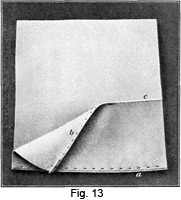 When 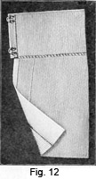the second fitting is done, remove the skirt and proceed to whip the top of the skirt to the belt in the manner shown in Fig. 12. By following this plan, it will be possible to trim away the surplus material up close to the top of the skirt, underneath the belt, and thus avoid bulk around the waist. Any bulk at this place would be inconvenient in a wash skirt, as it would not iron nicely, nor would it give a trim, neat appearance at the top of the skirt.
55. Facing the Wash Skirt.—It is advisable to face any circular skirt of wash material at the bottom with a fitted or a bias facing, so that no fulness or wrinkles will show through on the right side. If a hem is used in material as heavy as pique, it will be difficult to smooth or adjust the fulness at the top of the hem so that no plaits will be formed in laundering whereas, if a fitted hem is used, no such difficulty will be encountered. The facing on a wash skirt is not unlike that of a woolen skirt; yet it does not have to come so far up from the bottom, usually 1/8 in. being sufficient, as shown at a, Fig. 13. Neither is it necessary to bind the upper edge, as it may be turned over as at b, basted, and then stitched down, as at c.
56. Finishing and Pressing.—When the garment is completed, remove all the bastings. Then, provided the skirt is to be worn before it is laundered, rub magnesia over any soiled places. Let the garment thus treated lie for awhile; then brush the magnesia off and place a damp cloth over the right side of the skirt and press it thoroughly. The skirt may be dampened and pressed from the wrong side, if desired, but a damp cloth laid over the right side in pressing helps to freshen it.
PLAIN SIX-GORED SKIRT
57. Of all the tailored skirts worn by women, none is perhaps so popular as the six-gored skirt. The development of the circular six-gored skirt having been taken up in detail, it is now in order to discuss the plain six-gored skirt—that is, the skirt for which the plain foundation draft divided into six gores may be used as the pattern.
The making of the plain six-gored skirt itself is not taken up, because the work is practically the same as for the six-gored circular skirt. The pattern pieces are placed on the material in a similar manner, and the finishing of the skirt, except at the bottom, is precisely the same. In the circular skirt, because of the fulness, a fitted facing is practically a necessity, but in the plain six-gored skirt a straight hem is entirely satisfactory. The method of dividing the plain foundation draft for the six-gored skirt is considered in detail, however; and, in addition, there is explained the method of reducing the same foundation pattern at its lower edge, so as to demonstrate how it may be used when very narrow skirts are in vogue. Later, in discussing a six-gored, inverted-plait skirt, the manner in which allowances are made for plaits on the edges of the gores is also considered, with the idea of showing how such a skirt may be developed.
The plain six-gored-skirt pattern deserves more consideration than any other for the reason that the skirt developed from, it has much in its favor. In the first place, such a skirt is becoming to almost all figures. Even the very slender woman or the woman of large proportions can wear it with comfort. In tailoring materials, which are usually 52, 54, or 56 in. wide, it cuts more economically than any other skirt; besides, it is easily made, and after it is made it hangs well, because the gores hold their shape nicely.
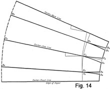58. Developing the Plain Six-Gored-Skirt Pattern.—The manner in which the plain six-gored-skirt pattern is developed from the two-piece plain foundation-skirt pattern is illustrated in Fig. 14. As will be observed, both the hip line and the bottom line of the skirt pattern are divided into four sections, which represent one-half of both the front and the back panel and two side gores. In addition, dart lines are drawn from the hip line to the waist line. Thus, as is evident, since the pattern represents only one-half of the skirt, six gores are provided.
59. The first step in the development of the six-gored pattern is to determine what the width of the front and back panels are to be. To do this, measure up from the center-front line on the hip line a distance equal to one-sixth of one-half the hip measure, plus 1/2 in. Assume, in this case, that the hip measure is 40 in., which gives a draft whose hip line is 20 in. With the square L. S. up and placed so that the straight edge of the short arm is on the center-front line and the scale of sixths is along the hip line, locate a point A2 opposite the figure that represents one-half of the hip measure; in this case it is opposite 20 on the scale of sixths. Then, 1/2 in. above A2, locate another point A3. The second point thus located, or A3, represents the edge of the front panel, which, to balance properly with the other gore, must be wider than one-sixth of one-half the hip measure. Next, measure down this same distance from the center-back line on the hip line—that is, one-sixth of one-half the hip measure, plus 1/2 in., using the scale of sixths on the square to insure a correct division—and locate point B2.
To provide for the other two gores, the distance between the edges of the front and back gores should be divided into two parts. Therefore, using the center-side line of the two-piece plain-foundation skirt pattern as the dividing line of the gores, point C2 will fall on the intersection of the hip line and the center-side line.
Next, determine by measurement the length of the bottom line of the skirt, and then divide this line for the gores. Assume in this case that the skirt measures 34 1/2 in. Then, placing the square as in dividing the hip line, locate point A4 opposite 34 1/2 on the scale of sixths, plus 1/2 in.; also, measure down the same amount from the center-back line and locate another point B3. Then locate point C3 at the intersection of the center-side line and the bottom line. With the points on both the hip and bottom lines thus located, connect points A3 and A4, B2 and B3, and C2 and C3 in the manner shown in the illustration, extending the line to the waist line in each case.
60. As will be remembered, dart lines in skirt drafting, such as the front dart, the side dart, and the back dart, are lines that connect the hip and waist lines; also, only one dart measure is taken, namely, that from the waist line at the side down over the fullest part of the hips. This dart must be referred to as the side dart when applied to the draft, because it comes directly over the hips at the side; and especially must it be called by this name when used in conjunction with the front and back darts, which are the lines that form the center-front line of the skirt from the hip line to the waist line and the center-back line from the hip line to the waist line. All these may correctly be called the foundation dart lines; however, just as many more dart lines as there are gores in the skirt may be supplied, and these, when used, must in no way be confused with the foundation dart lines. To avoid any confusion here, the first dart line above the center-front line will be referred to as the side front dart, and the first dart below the center-back line, as the side back dart; then, when two darts are used between the center-front and the center-side darts, the first one above the center front will be called the side front dart and the second one the second side front dart; also, corresponding terms will be applied to similar darts in the back of the skirt.
61. With the dividing lines drawn in the manner directed, proceed to determine the amount that is to be taken out in darts at the waist line. First, measure the waist line of the foundation skirt, and then subtract one-half of the waist measure from this amount. In this case, the foundation waist line measures, say, 16 7/8 in. and the waist measure is 26 in. By subtracting one-half of the waist measure, or 13 in., from 16 7/8 in., it is found that the amount to be taken out in darts is 3 7/8 in. Next, determine the amount that is to be taken out at each dart. The rule that governs the proportion for each dart in a six-gored skirt is to take out a little more than one-half the whole amount at the darts in the back and front, and the remainder at the dart in the center, that is, over the hip. In this case, for example, where the measurement shows that 3 7/8 in. is to be taken out in darts, it is found that a little more than one-half of 3 7/8 in. is 2 in. Therefore, as this amount must be taken out at the back and the front dart, only 1 in. has to be taken out at each. When darts are so small, it is advisable to take out an equal amount on each side of a gore; therefore, in this case, the amount to be taken out at each side of the front and the back gore is 1/2 in. Accordingly, locate points A5 and A6, and points B4 and B5 1/2 in. each side of the front and the back gore, respectively, to serve as guides in drawing the dart lines. After these darts are taken care of, the remainder, or 1 7/8 in., must be taken out at the side, or hip, dart. As has already been explained, a trifle more should be taken out on the bias side of the gore than on the straight side, from 1/4 to 1/2 in. being a good proportion. Therefore, measure 1 1/8 in. on the bias side of the gore to locate point C4 and 3/4 in. on the straight side to locate point C5, from which to draw the curved lines between the waist and the hip lines.
62. To draw the first dart line, that is, the one for the back edge of the side front dart, place the square, L. S. up, so that z of the L. A. C. is at point A3 on the waist line and the edge of the curve, near v, touches the hip line at point A3. For the next line, reverse the square and place the arrowhead of the L. A. C. on A6 and the edge of the curve, near dd, at A3. Then, in the same manner, connect points B4 and B2, points B5 and B2, points C4 and C2, and points C5 and C2.
In drawing the curves over the hips of skirts having six or more gores, it is well to bear in mind that they should not be very pronounced at any time, even when the waist line is much smaller than the hip line. The three darts make it possible to distribute the amount to be taken out so evenly that none of the dart lines will have to be prominently curved.
63. With the drafting completed, the pattern for the plain six-gored skirt may be cut out as follows: From the center-front line on the waist line to A5; from A5, through A3, to A4; and then from A4 to the center-front line. From A3 to A6; from A6 to C4; from C4, through C2, to C3; and from C3 to A4. From C2 to C5; from C5 to B4; from B4, through B2, to B3; and from B3 to C3. From B2 to B5; then on the waist line to the center-back line, to the bottom of the skirt; and then on the bottom line to B3.
64. Reducing the Plain Six-Gored-Skirt Pattern at Its Lower Edge.—To meet the demands of style, skirts frequently have to be made narrow at the lower edge. For six-gored skirts that must be narrow at the bottom, the drafting principle is the same as for a plain foundation skirt. In fact, the only exception to the drafting directions is that the line CD of the foundation draft be made 1 in. long instead of 1 1/2 in. Such a change will tend to reduce the flare at the bottom of the skirt and, likewise, will reduce the width of the skirt itself. If a skirt narrower yet than this is desired, locate a point 3/4 in. on each side of the center side seam at the lower edge, and then connect these points with the center side seam at E. By thus reducing from B and taking out the 1 1/2 in. at the lower edge, a foundation draft with a 40-in. hip, for example, will measure just 60 in. at the bottom. It is rare indeed that a narrower skirt would be desired for a hip measure of this size, but, in extreme cases, a skirt a trifle narrower could be made. In any event, the contour of the side line should be kept true and even; that is, there should not be a bulge in the line between D and B, because the line in a narrow skirt should be as nearly straight as possible in order to give the desired effect.
SIX-GORED, INVERTED-PLAIT SKIRT
65. In Fig. 15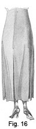 is 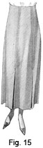shown the front and in Fig. 16 the back of a six-gored, inverted-plait skirt. This style of skirt is very attractive and may be worn by the majority of women. It has straight lines, and the inverted plaits provide a convenient amount of fulness. Plaited skirts in some form seem to be in vogue at all times, and as they may be developed from any plain-skirt pattern, no matter how many or how few gores are used, it would seem that the chief requirement for making them is a knowledge of how to allow for the plaits in cutting, how to baste, stitch, and finish them, and, especially, how to press them. Once a woman is thoroughly familiar with such details, she should encounter no difficulty whatever in making any kind of plaited skirt; indeed, when the manner in which to allow for and develop plaits is understood, it will not matter whether the skirt is of four or fifteen gores, for the same principle always applies.
66. Material Required.—For the reason that it is rather difficult to keep plaits in position if they are made of wiry or open-weave material, it is well to remember that fairly firm material should be chosen for a plaited skirt. To develop a skirt like that shown in Figs. 15 and 16, the original of which was made for a figure of average size, 3 1/4 yd. of 44-in. serge is required. Of course, other material to suit the wearer may be selected, but, as has been stated, it should be of a kind that will hold the plaits well.
67. Pattern Required.—For the inverted-plait skirt here shown use was made of the plain foundation-skirt pattern prepared in the manner explained for the plain six-gored skirt; that is, with an allowance for a raised waist line and divided so as to form six gores. This pattern is the one to use, unless a very full skirt is desired. In such a case, the circular-skirt pattern divided into six gores, as for the wash skirt, and extended above the waist line may be utilized.
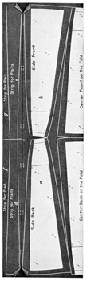68. Placing the Pattern and Cutting Out the Material. — As will be observed on referring to Fig. 17, which shows the plain six-gored pattern placed on 44-in. material for a six-gored, inverted-plait skirt, the center of each gore, as well as each strip, is placed as nearly as possible on a lengthwise thread of the material. If the skirt is to be made for a smaller person, the gores may be slipped alongside of each other and, of course, not quite so much length will be needed. On the other hand, if the skirt is to be made for a larger person, the pattern pieces, on account of being wider, will take up more material. However, one thing that should always be borne in mind is to place the pattern on the material correctly, regardless of whether or not it takes more material than is deemed advisable, for, as has been mentioned elsewhere, a garment may be entirely spoiled if one piece is cut the wrong way of the cloth. This point demands particular attention in connection with tailored garments, for their plainness makes it necessary for the material to be cut out correctly.
69. Heretofore, in connection with cutting out material, the custom has been to pin the selvage edges together. At this time, however, are brought out several new features, chief among which are the arrangement of the material with two folds and the allowance for plaits, as shown in the illustration. In placing the pattern on material lapped in this way, lay the material so that its folded edge is toward you and place the center-front and the center-back lines of the pattern pieces on the fold. Then place the two side gores so that the center of each gore is on a lengthwise thread, as shown at a and b. In pinning the side-gore pattern pieces in place, pin through only one thickness of the material; then if the material has to be slipped over it will not be necessary to remove all the pattern pieces.
70. As the illustration shows an allowance of 2 1/2 in. is made at the bottom of each gore for the plaits, while at the top of each gore it is only 1 1/4 in. To form the edges of the plaits, locate a point 1 1/4 in. both to the right and to the left of the top of each gore and a point 2 1/2 in. both to the right and to the left of the bottom of each gore; then connect these points with diagonal lines, as shown. When the four pattern pieces that provide for the six gores of the skirt are placed and marked, bring the material over in the manner shown at c and prepare to cut the strips that go underneath to form the inverted plaits. These strips are very similar to the strips for the slot seam, but each strip must be made twice as wide as the allowance for the plaits at both the waist line and the bottom of the skirt, in order to have them fit exactly in position. If the pattern pieces of the skirt are very large, then an extra length of material must be provided for these strips; however, if they are narrow enough to be placed in the manner shown, one entire skirt length will be saved, because there will then be sufficient material at the outer edge to bring over and fold back, as is indicated at c. As the skirt has six gores, it is necessary to have six strips; therefore, two strips are cut out as at d, two as at e, and two more on the fold, as at f and g. So that these strips will conform to the width of the plaits, care must be taken in measuring for them to have each strip 2 1/2 in. wide at the top and 5 in. wide at the bottom.
71. Before proceeding to cut out the material, outline each edge of the pattern properly, allowing 1/2 in. at the top of the gores for the seam at the waist line and 3/4 to 1 in. at the bottom of the skirt; also, use plenty of pins in pinning the pattern pieces on, so that they will hold in position and not slip out of place. Then cut out the material, being very careful to get the edges true and even.
72. Marking, Pinning, and Basting.—When the material for the skirt is cut out, proceed to mark-stitch the hip line, the waist line, and all around the pattern edges, remembering to lay the cloth out smooth on the table, so that it cannot slip underneath the pattern and thus cause an imperfect mark-stitched line. Next, remove the pattern from the material, and in so doing notch each gore at the hip line, notching the gores in the same order in which the skirt was cut apart, so that it may be put together correctly.
With the material ready, pin the skirt together, pinning on the pattern lines and up and down from the hip line. When the pinning is done, proceed to baste the skirt. In basting, use small stitches, for, as the seams of this skirt are similar to slot seams, the basting must be straight and even and the stitches therefore small enough to hold the edges of each seam in correct line. For the placket, leave an opening on the left-hand side of the back panel or on the left-hand side of the front panel. With the skirt thus basted, slip it on for the first fitting.
73. First Fitting.—In connection with the first fitting, it is well to remember that a plaited skirt should not fit too close. Have it appear just smooth and easy in every place, for when the strips that go underneath are put in place they will fill the skirt out a trifle. If the skirt should appear too large, it should, of course, be taken in the necessary amount at the side seams to make it fit correctly. When the skirt is fitted, remove it and proceed to press the seams open. Be sure to dampen the seams carefully and to press them thoroughly, so that the edges will be as straight as possible; on this pressing depends considerably the good or bad appearance of the finished skirt.
74. Adding the Strips and Marking the Placket.—With the work thus advanced, proceed to place in position the strips that aid in forming the underneath plaits. Pin the center of each strip directly underneath the seam, easing the strips to the seams so that they will not appear drawn. Then baste them carefully, in exactly the same manner as for a slot seam. With these strips in place, proceed to make the placket, following the same idea as in making the placket \u the slot seam of the circular skirt previously discussed. After the placket is finished, baste the strips from the right side of the garment, so that they will lie perfectly flat. The skirt is then ready for the second fitting.
75. Second Fitting.—It may be well to mention at this time that skirts of this kind really require three fittings. For the second fitting, therefore, slip the skirt on so as to make sure that the strips do not draw in any place and that the skirt fits smoothly. If any alterations must be made, such work should be done very carefully in order not to interfere with the line of the plaits at each seam.
76. Stitching.—When the skirt is removed from the figure after the second fitting and all necessary alterations have been made, sponge and press the strips from the wrong side in order to take up any fulness and thus have them perfectly smooth. Then prepare to stitch the skirt from the right side. First determine what the depth of stitching should be. Dame Fashion controls this entirely. Sometimes the stitching extends scarcely to the hip line, and then, again, it comes down well over the hips and at other times almost to the bottom of the skirt. Therefore, in deciding on the length of stitching, it is well to consult the fashion magazines, for it must be remembered that the styles in stitching change just the same as the lines of a garment. However, the plaits on each side of the front panel should always be stitched the same distance; also, the stitching at the side seams should be from 1 1/2 to 3 in. shorter than that in the front of the skirt, and the stitching at the back gore should be from 1 1/2 to 3 in. shorter than that at the side.
77. With the depth of stitching decided on, lay the skirt out on the sewing table and measure down from the waist line on each seam the length that the stitching should extend, and place a pin crosswise in each case. Next, adjust the gauge of the sewing machine to mark the proper width of stitching, and then try a small sample of the material to see whether the stitching, as well as the color of the thread, is correct. With all made ready, lay the skirt out on the table of the sewing machine and begin to stitch, remembering to begin at the waist line and to stitch down on each plait. Be careful, also, to keep the material up well on the table, so that it will not pull or drag down, for it is impossible to get even stitching or to keep the seam lines even if the weight of the material pulls it away from the presser foot of the sewing machine. When one side of a plait is stitched, turn and stitch down to a point at the center of the plait, marking the turn with a corner of an envelope in order to insure accuracy. Next, stitch the other side of the plait from the waist line down to the center of the plait, as shown in Figs. 15 and 16. In doing this work, there might be a temptation to turn at the bottom of the stitching and stitch the opposite side of the plait at the same time. This, however, would be a mistake, for there would then be danger of drawing and pulling the seam. Remember always, in stitching of this kind, to begin at the waist line and stitch down and to bring the stitched lines together at the center of the plait; also, be sure to bring the threads through to the wrong side and then tie them securely.
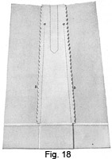When all the plaits are stitched on the right side in the manner directed, turn the garment over and stitch the edges of the strips to the edges of the plait allowance en the wrong side. Have the stitching come about 3/8 to 1/2 in. from the edge, and begin it up on each seam about 3 in. beyond the termination of the stitching on the right side, as shown at a, Fig. 18, so that the seams will be in no danger of pulling out. When all the stitching is done, proceed to bind, overcast, or notch the seam edges from the waist line to the bottom of the skirt.
78. Third Fitting and Finishing.—The skirt is now ready for the third fitting, which, for this style of skirt, is the same as the second fitting in other skirts. Therefore, slip the skirt on and secure it to the stay belt, which, for this skirt, is the same as the stay belt previously described; then turn the hem, observing the same precautions as in turning the hems of other skirts. Next, remove the garment and proceed to finish the waist line of the skirt, which work is done in the manner directed for the plain circular skirt; also, finish the hem by simply binding it at the top in the usual manner for plaited skirts. Finally, lay in the plaits as for a box-plaited skirt, and proceed very carefully to press them, as well as the entire skirt.
79. Pinking.—An excellent way in which to finish the seam edges is to notch them with a pinking machine, which work is called pinking. Such a finish, as shown at b, Fig. 18, is both satisfactory and pleasing. Machines with which to do pinking make a very valuable addition to a sewing outfit; in fact, in shops where considerable work is done, a pinking machine is practically invaluable. A very good pinking machine may be purchased for about $5. It is usually provided with three blades, one for cutting a very small notch, one for cutting a medium notch, and the other for cutting a fancy notch that may be used in trimming the edges of capes, plaitings, and so on. The directions for operating such a machine are usually contained in the book of instructions that accompanies it.
SIX-GORED, BOX-PLAITED SKIKT
80. In Fig. 19 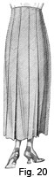is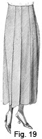shown the front and in Fig. 20 the back of a six-gored, box-plaited skirt. This skirt is developed in much the same manner as the six-gored, inverted-plait skirt. The same plain six-gored pattern is used in cutting, and, although the pattern pieces are placed on the material in practically the same positions, they are kept closer together, because it is not necessary to allow on the gores for the box plaits. In fact, the entire allowance must be made on the plaits themselves, so that no seams will show in them. Besides, since the gores meet each other underneath the plaits, it is not necessary to allow for seams on the center-front and center-back panels; the only seam allowance that must be made is on the back edges of the front side gores and on the front edges of the back side gores. In other words, allow seams on just these pattern edges and at the top and bottom of the skirt. Instead of six strips for plaits, as in the inverted-plait skirt, only four strips are required for plaits in the box-plaited skirt, because plaits are used along the panel edges of the front and back gores only, the seams at the center sides being uncovered. In cutting the strips for the plaits, however, it must be borne in mind that, since no allowance is made on the gores for plaits, they must be at least twice as wide as the strips for the inverted plaits; that is, each strip for the box-plaited skirt should be 5 in. wide at the top and 10 in. wide at the bottom. It will readily be seen, therefore, that a skirt of this kind requires almost the same amount of material as the six-gored, inverted-plait skirt.
81. In constructing the box-plaited skirt, first mark with a basting thread the center of each strip that is to be used for a plait; then fold under the raw edges of each until they meet exactly at the center of the strip, and baste the fold on each side of the plait thus formed, taking great care to get the edges absolutely true. When all the plaits are formed and basted, press them carefully so that they may be applied to the gores of the skirt.
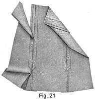Next, proceed to make the skirt ready. First bring together the pattern edges of the front gores and the front side gores, as well as those of the back gore and the back side gores, and baste them in the manner shown at a, Fig. 21. In this diagonal basting be very careful not to draw the seams in any place, nor to overlap them or let them separate at any point, for, as no seams are allowed for on these edges, they must come together exactly. When these gores are properly basted, pin the plaits over them. In doing this, be extremely careful to keep the center of each plait exactly over the meeting edges of the gores; also, be sure to hold the plait perfectly smooth, so that it will not be too full nor yet so tight as to draw in any place. When the plaits are pinned in place, baste them to the gores of the skirt, basting in 1/2 to 3/4 in. from each edge of the plaits and leaving an opening under the left side of the left front plait for the placket.
82. Next, pin and baste the side seams together and slip the skirt on for the first fitting, adjusting it properly on the figure. If the skirt appears too tight, clip the basting that holds the gores together underneath the plaits at the seams where the extra fulness is needed; for instance, if the skirt appears to be a little tight over the hips, let out the basting at the center side seams and let each gore out a trifle. If considerably more freedom is needed, rather than allow too much on the front edges and thus destroy the line of the gores, let out the edges of the side back gores and slip the gores out from under the plaits enough to allow for the necessary amount. If the skirt is too large, clip the bastings and slip the gores far enough underneath the plaits to take out the desired fulness, or, take up the center side seams a trifle. In any event, the amount let out or taken up should be at the seams where it is most needed. As will be remembered, one of the good features of the six-gored skirt is that the seams are conveniently placed to make it an easy matter to fit almost any figure.
83. After the skirt is removed, even up any seams that were opened in fitting and replace the necessary basting; then press the skirt on the wrong side. Next, apply the placket facings in the manner shown at b, Fig. 21. As will be observed, this placket is finished similarly to that of the seam placket, in which straight facings are used and the edge is stitched down before the snap fasteners are sewed on, as is explained in connection with the making of tailored plackets.
With the placket finished, proceed to stitch the skirt, following the directions given in connection with the inverted-plait skirt. Then slip the skirt on and secure it to the stay belt; also, turn the hem. After removing the skirt from the second fitting, the garment is ready for finishing, but as this work is the same as in making other skirts, it is not repeated here.
SEVEN-GORED SKIRT
84. The seven-gored skirt is nothing more or less than the plain six-gored skirt with an inverted plait added at the back, thus forming a skirt that has a seam and plaits at the center back, instead of a plain panel. The necessity of forming an inverted plait in a skirt of seven gores should be readily apparent, for if just a seam were placed at the center back of such a skirt the back gores would appear too narrow as compared with the other gores of the skirt. The making of a seven-gored skirt is not taken up in detail, because, with the exception already noted, no new feature is involved.
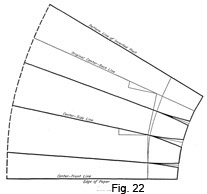85. To prepare the pattern for a seven-gored skirt, proceed as in changing the plain foundation-skirt pattern into the six-gored pattern. When this is done, simply add the gore for the inverted plait at the center back in the following manner, referring to Fig. 22 as a guide: First, place the square, L. S. up, so that its short arm is on the center-back line of the skirt pattern and its corner is at the intersection of the center-back line and the hip line; then draw a 5-in. line along the straight edge of the long arm. Next, with the square still L. S. up, place it so that the 4-in. mark of the short arm is at the intersection of the waist line and the center-back line and the straight edge of the long arm is at the end of the 5-in. line just drawn; then draw a line along the short arm from the 4-in. mark to the corner of the square. With the square in the same position, draw also a line along the long arm, extending it until it is as long as the center-back line of the skirt pattern. Finally, form the bottom line of the plait portion by continuing the curved bottom line of the skirt pattern to the line last drawn.
In cutting out the pattern, proceed as in cutting out the pattern for the six-gored skirt, up to the back gore. Then cut on the inverted-plait lines, which will leave the back gore and the inverted plait in one piece.
EIGHT- AND NINE-GORED SKIRTS
PATTERNS FOB PLAIN SKIRTS
86. The construction of eight- and nine-gored plain skirts differs so little from the construction of six- and seven-gored plain skirts that only the preparation of the required patterns is here considered. As will be observed on referring to Figs. 23 and 24, a nine-gored skirt provides for a front panel, which is cut on the fold of the material; three gores on each side; and two back gores, which form an inverted plait at the back, as in the seven-gored skirt, at which place, also, is usually put the placket. The eight-gored skirt is really developed from the nine-gored-skirt pattern; that is, the extension at the back is disregarded in cutting out the material, both the center-front and the center-back line being placed on the fold, just as in cutting out the six-gored skirt. Thus, an eight-gored skirt has three gores on each side and a panel in the front and the back; whereas, the nine-gored skirt has three gores on each side, a front panel, and an inverted plait at the back.
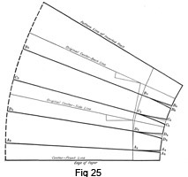87. To procure a pattern for a nine-gored plain skirt, the plain foundation-skirt pattern should be divided in the manner shown in Fig. 25; that is, by locating points on the hip and bottom lines of the pattern and connecting them with lines, drawing in the lines for darts, and then adding the extension at the center back.
First, divide the hip line. Thus, for the front gore, measure up from the center-front line a distance equal to one-eighth of one-half the hip measure, plus 1/4 in., and locate point A2; for the back gore, measure down the same distance from the center-back line and locate point B2; and, then, for the side gores, divide the space between points A2 and B2, or the remainder of the hip line, into three equal parts by means of two more points C2 and D2, as shown. Next, divide the bottom line in the same manner. For the front gore, measure up from the center-front line one-eighth of one-half the bottom measure, plus 1/4 in., and locate point A3; also, at the same distance below the center-back line, locate another point B2. Then divide the space between these two points in the manner directed for dividing the similar space on the hip line, lettering the points C3 and D3 With these points located, connect those on the bottom line with the corresponding points on the hip line, extending each line to the waist line, as shown.
88. The darts require attention next. For proportioning the amount to be taken out, as well as for drawing the dart lines, the directions given in connection with the preparation of the six-gored-skirt pattern apply. Thus, to determine the amount to be taken out in darts for the nine-gored-skirt pattern, first measure the foundation pattern waist line and deduct one-half of the waist measure from this amount. In this case, the foundation pattern measures 16 7/8 in. Therefore, as the waist measure used is 26 in., one-half of the waist measure, or 13 in., deducted from 16 7/8 in. leaves 3 7/8 in. to be taken out in darts. As there are four darts in the nine-gored pattern, the amount to be taken out is distributed among them. The first, or front, dart is 1/2 in. wide, that is, 1/4 in. on each side of the gores, as indicated at A4 and A5. The back dart is 3/4 in. wide, 1/4 in. being taken out at the front edge of the back gore, as at B4, and 1/2 in. at the back of the side back gore, as at B5. The remainder of the amount for darts is taken out at the two side darts; therefore, since 1 1/4 in. was taken out at the back and front darts, there remains 2 5/8 in. to be taken out for the other two darts. A little more than half of this amount is taken out at the side back dart, 1/2 in. being taken out at the back of the dart, as at C4, and 7/8 in. at the front, as at C5 also, 1/2 in. is taken out at the back of the side front dart, as at D5, and 3/4 in. at the front of the dart, as at D5. When all the points for the darts are located, draw in all the dart lines, following the directions given for such work in connection with the plain six-gored-skirt pattern.
Finally, add the gore for the inverted plait at the back, following the directions given for adding such a gore in connection with the seven-gored skirt.
89. To form the pattern for the nine-gored, side-plaited skirt, cut the draft as follows: From the center-front line on the waist line to A5; from A5, through A2, to A3; and from A3, on the bottom line, to the center-front line. From A2 to A4; from A4 to D5; from D5, through D2, to D3; and from D3 to A3. From D2 to D4; from D4 to C5; from C5, through C2, to C3; and from C3 to D3. From C2 to C4; from C4 to B5; from B5, through B2, to B3; and from B3 to C3. From B2 to B4; on the waist line to the end of the inverted-plait line; on the inverted-plait line to the bottom of the skirt; and then on the bottom line to B3.
NINE-GORED, SIDE-PLAITED SKIRT
90. In Fig. 23 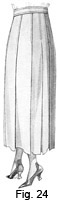is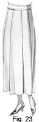 shown the front and in Fig. 24 the back of a nine-gored, side-plaited skirt, the name side-plaited being applied because of the fact that all the plaits turn from the front toward the side of the figure. This style of skirt has much to recommend it, and aside from being attractive it is not difficult to make.
91. Pattern Required.—For a tailored skirt of this kind, the plain nine-gored-skirt pattern is usually satisfactory for the reason that it, with the plaits, provides plenty of fulness; however, if a fuller skirt is desired, then the circular-skirt pattern, properly divided, may be utilized.
92. Placing the Pattern and Cutting Out the Material.—In placing the pattern for the nine-gored, side-plaited skirt on the material, be sure to pin each piece securely. As woolen materials slip out of position more easily than cotton materials, it is necessary to use more pins in handling them. As shown in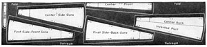 Fig. 26, put the center-front line of the front gore on the fold, and place the side and back gores so that the center of each is on a lengthwise thread of the fabric. In placing the pattern pieces, it must be remembered that the plaits for the skirt must be allowed for on each side of a gore; therefore, before cutting, mark this allowance for plaits, and, in addition, allow 1/2 in. for seams, using the straight edge of a yardstick or the square in marking. The plait in each case should be 1 1/2 in. deep at the top and 2 1/2 in. deep at the bottom. The plaits are made narrow at the top so as to avoid too much bulk of material at the waist line. As will readily be seen, if the plaits were made as wide at the top as at the bottom, they would overlap and appear clumsy; also, they would tend to make the hips and waist appear much larger than they really are. With the allowance for the plaits and the seams marked on the material, proceed to cut out the garment, but do not remove the pattern pieces until the mark-stitching is done because there would then be danger of getting it untrue.
93. Mark-Stitching, Pinning, and Basting.—Proceed, next, to mark-stitch all around the edges of the pattern, as well as on the hip line and the waist line; also, turn the skirt pattern back on the inverted-plait line and mark-stitch it, so that this line may be folded in position when the skirt is put together. Then, after removing the pattern pieces, turn the edges of the front gore over to the wrong side and baste on the mark-stitched lines. Place this gore over to the pattern line on the front edge of the first side gore and pin it in position, mark-stitched lines meeting and waist and hip lines together; turn under the back edge of the first side gore and baste it; then lap it to meet the pattern line of the front edge of the center side gore, and so continue until each gore is basted. With this basting done, turn the inverted plait back and baste on the original center-back line. Then baste up the center-back seam and prepare for the first fitting.
94. First Fitting.—For the first fitting, slip the skirt on and adjust it well on the figure, taking care to see that each plait, on the wrong side, is turned toward the front so that the skirt will set smooth and easy. Remember, at this time, not to fit the skirt too tight, for when it is stitched it will appear to fit closer than it does when the gores are just basted together, even if the basting stitches are small. If the skirt is too loose, move the front panel over an equal amount on each side of the first side gore and turn the inverted plait at the back in a trifle deeper. If this change is not sufficient, determine how much smaller the skirt should be and take an equal amount off each gore. This work may be accomplished without interfering with the turned edge of the plait by simply taking out the basting that holds the gores together and moving them over a little. If the skirt is too small, let out the inverted plait a trifle, rip the basting on the front panel, or gore, and then make this gore a little wider on each side. If it is much too small, then each gore must be let out enough to allow sufficient fulness.
95. Preparing the Skirt for Stitching.—When the fitting is done, remove the skirt and make the alterations that are necessary, taking care to see that they are evenly balanced; that is, that the same amount is taken off or added to correspond to the gores on each side of the skirt. If the alterations are many, it will be wise to try on the skirt again to see whether or not they are correctly made. After any necessary changes are made, press the skirt on the wrong side, so that the edge of each turned plait will be even and smooth before the stitching is added. With this work done, remove the basting from the center-back seam and make ready to stitch the plaits, taking the usual precaution to mark for the termination of the stitching, to adjust the gauge of the sewing machine, and to see that the thread matches correctly.
96. Stitching and Binding the Seams.—Before stitching the seams of this skirt on the wrong side, to secure accurate results, first stitch all the plaits except the inverted plait at the back. Be sure to leave 4 or 5 in. of thread at the bottom of each tuck so that each thread may be pulled through on the wrong side, a needle threaded with it, and backstitches taken to secure it. When the plaits are stitched, remove the basting as far down as the stitching extends on the plaits, so that there will be no danger of the basting threads causing an imprint in pressing.
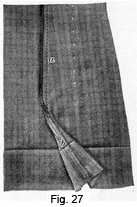Next, place the skirt on the ironing board, right side up, put a press cloth over it, dampen the cloth over each plait, and press the plaits very carefully. With this done, lay the skirt out on the sewing table with its wrong side out and trim the seam edges even. Remember, though, that the allowance is made for plaits and that it should not be trimmed away; merely trim away enough to make the edges of the gores come together even. Then stitch the gores with a seam that is 3/8 to 1/2 in. wide, as shown at a, Fig. 27. When the seams are evenly trimmed and stitched, bind each with bias binding of facing silk like that used for a placket finish; or, if the material is of the kind that does not fray easily, use a 1/2-in. ribbon seam binding. A 6-yd. bolt of such binding can be purchased for 10 cents at all notion counters. It comes in white, black, and a few colors. Seam binding may perhaps be applied quicker than bias binding, but, as it is only 1/2 in. wide, it will not hold the seam edges of any material very securely; therefore, the bias binding is generally more satisfactory. When the seams have been carefully bound, proceed to baste and stitch the center-back seam. Baste and finish the placket opening as for an inverted-plait placket, extending the stitching down far enough to correspond with that of the side gores. Then press the center-back seam open and bind each edge separately.
97. Second Fitting.—The skirt is now ready for the second fitting. Therefore, put it on, adjust it at the waist line, and then pin a tape securely around the waist, so that an absolutely correct waistband may be made. This matter should receive careful attention, for it is very distressing to have a tailored skirt slip from under the belt on account of being too loose, and, likewise, it is distressing for it to be too tight, as a tight waistband has a tendency to draw into the figure as if a cord were drawn around the waist and, as a result, the skirt will not hang well. If a skirt should seem to be a little tight through the hips, lift it a trifle at the waist line to allow the necessary fulness. With the waist line taken care of, turn the hem, using plenty of pins to hold the edge even all the way around.
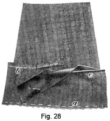98. Finishing the Garment. After the second fitting, remove the skirt and then baste and press the lower edge of the hem and open it out, as shown in Fig. 27. Then, from the bottom up to the seam binding, trim the seam edges to within 1/4 in. of the stitching, as at b. When these edges are trimmed away, press open the seam, to prevent it from forming a cord in the hem, turn the hem back in position, and baste its lower edge, as at a, Fig. 28. Then measure and trim the hem even, run a gathering thread around the top 1/4 in. from the upper edge, as at b, lay the skirt out on the ironing board, dampen the hem and shrink the fulness by bringing the iron up from the bottom of the skirt and holding the fulness in with the gathering thread until the turned portion is exactly the size of the top of the hem. This work must be very carefully done in order to take out all the fulness, for, of course, if fulness in any tailored skirt is plaited in, it will not look well and eventually it will show on account of the frequent pressings that a skirt of this kind must receive. Next, bind the upper edge from the right side of the hem with bias binding, as at c, trimming away the edge just below the gathering thread. Finally, baste the hem in and stitch at the top of the binding and press the plait; then the hem, the plait, and the binding will appear as in 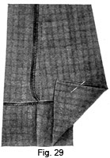Fig. 29.
When the hem has been taken care of in the manner explained, put the band on and sew hooks and eyes on it in the usual way; then remove all basting and give the skirt a thorough pressing. If desired, hangers may be put on the inside of the band. Since, at each plait, there is a seam that stays the plait and holds it in position, the inside edge of the plait does not have to be stitched as in making box plaits in wash skirts.
TAILORED SKIRTS
EXAMINATION QUESTIONS
- Why are tailored skirts satisfactory for hard wear?
- What precaution should be taken in selecting material for a tailored skirt?
- (a) Why is it advisable to buy cream-colored woolen material instead of white?
(b) What kinds of materials shed dust most readily? - What governs the finish around the waist line of a tailored skirt?
- How wide should the extension above the waist be made for a short-waisted figure?
- (a) In making a one-piece circular skirt, what is the first consideration?
(b) What kind of material is best suited for such a skirt ? - What precaution should be taken in pinning the seams of a skirt together?
- When is it advisable to use skirt braid?
- How much work has to be done to a skirt before it is ready for first fitting?
- (a) Why is a plain six-gored skirt regarded with much favor?
(b) What is the first step in the development of the six-gored-skirt pattern? - What thought should be borne in mind while placing a gored skirt pattern on the material ?
- How can a gored skirt be reduced at its lower edge?
- Why should an inverted-plait skirt be rather loose in first fitting?
- In cutting a box-plaited skirt, why is no allowance made for the plaits at the edge of the gores?
- In what way does a seven-gored-skirt pattern differ from a six-gored-skirt pattern?
- (a) How are plaits allowed for in a nine-gored, side-plaited " skirt?
(b) Why is it necessary to mark-stitch the line that indicates the inverted plait of a skirt? - In the hem of a plaited skirt, why is it advisable to press the seam open before finishing it?
- How may the fulness be shrank out of a hem?
- Explain how to make alterations in a side-plaited skirt.
- What is the advantage of the seam on the inside underneath edge of a plait?